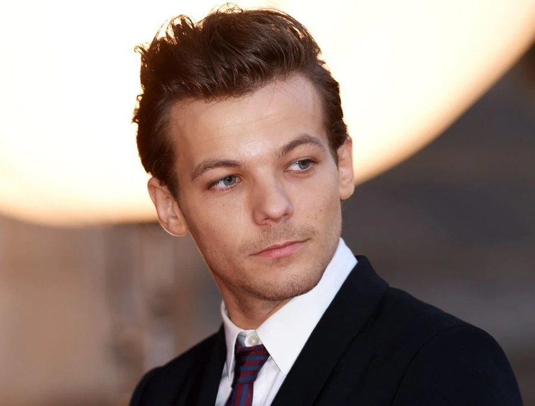

ABOUT ONE DIRECTION

One Direction, often shortened to 1D, are an English-Irish pop boy band
formed in London, England in 2010.
The group are composed of Niall Horan, Liam Payne, Harry Styles and
Louis Tomlinson.
Former member Zayn Malik departed from the group in March 2015. The
group signed with Simon Cowell's record label Syco Records after forming
and finishing third in the seventh series
of the British televised singing competition
The X Factor in
2010.
One Direction achieved third place in the competition and immediately
after the final, their song "Forever Young", which would have been
released
if they had won The X Factor, was leaked onto the internet.
Shortly afterwards it was confirmed that One Direction had been
signed by Cowell to a reported £2 million Syco Records record contract.
Propelled to global success by social media, One Direction's five
albums;
Up All Night
(2011),
Take Me Home
(2012),
Midnight Memories
(2013),
Four (2014), and
Made in the A.M.
(2015), topped charts in most major markets,
and generated hit singles including "What Makes You Beautiful" (their
first number one on the
U.K. Singles Chart,
and the highest debut for a British act
on the U.S. Billboard Hot
100 since 1998), "Live While We're Young",
"Best Song Ever",
"Story of My Life" and "Drag Me Down".
After the release of
Four, One Direction
became the first band in the U.S. Billboard 200 history to have their
first four albums debut at number one. Their third album,
Midnight Memories,
was the best-selling album worldwide of 2013.
Considered teen idols, One Direction were often subject to fan
hysteria.
They have embarked on four world tours, two of which were all-stadium.
The band's Where We Are Tour, in support of Midnight Memories,
was the highest-grossing concert tour in 2014, the highest-grossing
tour
by a vocal group in history and the 15th highest-grossing concert tour
of all time, grossing $290.2 million (unadjusted for inflation).
The band went on hiatus in January 2016, allowing all members to
pursue
other projects.
MEET THE BAND

Louis William Tomlinson né Austin; 24 December 1991) is
an English singer
and songwriter. He rose to fame as a member of
the boy band One Direction.
He began his career as an actor, appearing as an extra in ITV
drama film
"If I Had You" and the BBC drama Waterloo Road. In 2010, he auditioned
on the British music competition series The X Factor. After being
eliminated as a solo performer, he was put into a group with four other
contestants, forming One Direction.
Following the group's hiatus in 2016, "Just Hold On" was released
as Tomlinson's debut solo single in December 2016. It peaked at number
two
on the U.K. Singles Chart and was certified platinum in the U.K..
In 2017, Tomlinson released "Back to You" with American singer
Bebe Rexha,
certified platinum in the USA and U.K. and "Miss You".
In 2018 Tomlinson appeared on the fifteenth series of The X Factor as a
judge
and a mentor of the "Boys" category. He became the first former
contestant
of the show to become the winning mentor due to his
mentee Dalton Harris
winning the show.
In 2019, Tomlinson released the singles "Two of Us", "Kill My Mind", "We
Made It",
"Don't Let It Break Your Heart" and "Walls",
preceding his debut
album Walls, released in January 2020.
In 2013, Tomlinson was signed as a footballer by Doncaster Rovers of the
Football League Championship on a non-contract basis. The same year he
also formed his own record label, Triple Strings, as an imprint of One
Direction's label Syco.
He appeared on Debrett's 2017 list of the most influential people in the
U.K..
James Horan, born 13 September 1993) is an Irish singer
and songwriter.
He rose to prominence as a member of the boy band
One Direction,
formed in 2010 on the British singing competition The X Factor.
Following the band's hiatus in 2016, Horan signed a recording deal
as a solo artist with Capitol Records.
Horan's debut solo album, Flicker (2017), debuted at number one in
Ireland
and the US, and reached the top three in Australia and the U.K..
Its singles "This Town" and "Slow Hands" reached the top 20 in several
countries. Horan's second studio album, Heartbreak Weather, was released
in March 2020 and debuted at number four in the US and number one in the
UK, Ireland,
and Mexico.
"Five albums in five years, is hectic but thoroughly enjoyable! The
process of making an album is a good laugh."

Edward Styles, born 1st February 1994 is an English
singer, songwriter and actor. His musical career began in 2010 as a solo
contestant on the British music competition series, The X Factor.
Following his elimination early on, he was brought back to join the boy
band
One Direction, which went on to become one of the best-selling boy
bands
of all time.
Styles released his self-titled debut solo album through Columbia
Records in 2017. It debuted at number one in the U.K. and the U.S., and
became one of the world's top-ten best-selling albums of the year. Its
lead single, "Sign of the Times", topped the U.K. Singles Chart.
He made his acting debut in Christopher Nolan's 2017 war film
"Dunkirk".
Styles' second album, "Fine Line" (2019), debuted atop the U.S.
Billboard 200
with the biggest first-week sales by an English male artist in history,
and was listed
among Rolling Stone's "500 Greatest Albums of All Time" in 2020.
Its fourth single, "Watermelon Sugar", topped the US Billboard Hot 100.
Throughout his career, Styles has earned several accolades, including
a Brit Award, an American Music Award, two ARIA Music Awards,
and a Billboard Music Award. Aside from music, he is also known for his
flamboyant fashion, and is the first man to appear solo on the cover of
Vogue magazine.
Liam James Payne, born 29 August 1993 is an English
singer and songwriter.
He rose to fame as a member of the boy band One Direction.
Payne made his debut as a singer in 2008 when he auditioned for the
British television series The X Factor. After being eliminated in the
competition,
he auditioned again in 2010 and was put into a group with four other
contestants
to form One Direction.
Payne worked with other producers under the
monikers "Big Payno" and "Payno" creating remixes for songs by his group
and Cheryl.
After One Direction's hiatus, Payne signed a recording deal with
Republic Records
in North America. In May 2017, Payne released "Strip That Down" as the
lead single from his debut album. It peaked at number three on the U.K.
Singles Chart
and number ten on the U.S. Billboard Hot 100, being certified platinum
in both countries. His debut album, LP1, was released in December 2019.
He has sold over 18 million singles in just two years since One
Direction and over 3.9 billion career streams in that span.
"In the past, me and Louis had written a lot. At this stage, everyone
joined in which was really cool as we all brought our own
influences."
WHY ONE DIRECTION

I have never been one genre or one artist or band person, I will listen
to any genre or artist or band as long as the music is fantastic.
I have favourite songs from a myriad of genres from Benga and similar
folk songs
to rock and everything else in between.
But I came to realize there is no pne artist or band that I love almost
every work they have ever done like I do the works of One Direction.
Every song One Direction have done from their teen years to the present
are great hits in my book.
"It’s one of those songs that the first time you hear it, it’s a good
record, second time you hear it,
it’s a great record, and then the third time you hear it, it’s a
fantastic record.
And it was a unanimous decision that it was gonna be the first single.
It’s just a fantastically
good pop record, and it typified what the group were all about; it’s
quirky, it’s fun, and we couldn’t have
wished for a better first record." -
Simon Cowell on "What Makes you Beautiful.
Here is some of my reasons why I love One Direction;
-
Their music is - as the exercise put it - food for the soul. It is the
kind of music you listen to and you find yourself singing along and
filled with energy since they are energetic pop records.
-
Their looks - Not only do they releast hot and amazing songs, they also
got killer looks. If I was a girl or gay I would probably be having a
crush on one of them, haha-haha.
-
They are funny - Each of their videos always incorporate funny comedic
sequences that easily keep you glued to the screen till the last second.
They are like short movies that tell a story
on themselves and there are very few music videos that come close.
-
They are nice, kind and respectful to their fans unlike most successful
music artists - they have remained humble and kept off useless scandals,
though it pains loads that they separated.
It is always uncanny that great music bands eventually break up; 1D,
Swedish House Mafia, P-Square, just to mention a few.

Here is my ten best One Direction hit songs in and their current Youtube views as of 27th February 2021;
- Story of my life - 881 Million.
- From the Album Midnight Memories that become number 1 in 19 countries was written by
Niall Horan, Zayn Malik, Liam Payne, Harry Styles, Louis Tomlinson, Jamie Scott, John Ryan
and Julian Bunetta.
- Drag me Down - 929 Million.
- From the Album Made in the A.M., Drag me Down was written by Julian Bunetta, Jamie Scott
and John Ryan.
- Best Song Ever - 711 Million.
- From the Album Midnight Memories, Best Song Ever was written by Julian Bunetta, Wayne Hector,
Ed Drewett, Pete Townshend and John Ryan.
- Live While We're Young - 677 Million.
- From the Album Take Me Home that went Platinum in 21 countries, Live While We're Young was written by Topper Headon, Mick Jones, Paul Simonon,
Joe Strummer, Savan Kotecha, Rami Yacoub and Carl Falk.
- Kiss You - 508 Million.
- From the Album Take Me Home, Kiss You was written by Kristian Lundin, Albin Nedler, Shellback, Joe Strummer, Savan Kotecha, Rami Yacoub, Carl Falk
and Kristoffer Fogelmark.
- Night Changes - 387 Million.
- From the Album Four, Best Song Ever was written by Niall Horan, Zayn Malik, Harry Styles, Liam Payne, Louis Tomlinson, Jamie Scott, Julian Bunetta
and John Ryan.
- Steal My Girl - 368 Million.
- From the Album Four, Steal My Girl was written by Louis Tomlinson, Liam Payne, Wayne Hector, Julian Bunetta, Ed Drewett and John Ryan.
- One Thing - 693 Million.
- From the Album Up All Night, Live While We're Young was written by Rami Yacoub, Carl Falk and Savan Kotecha.
- You & I - 504 Million
- From the Album Midnight Memories, was written by Julian Bunetta, Jamie Scott, John Ryan
- What Makes You Beautiful - 1.2 Billion.
- From the Album Up All Night, Live While We're Young was written by Rami Yacoub, Carl Falk and Savan Kotecha.